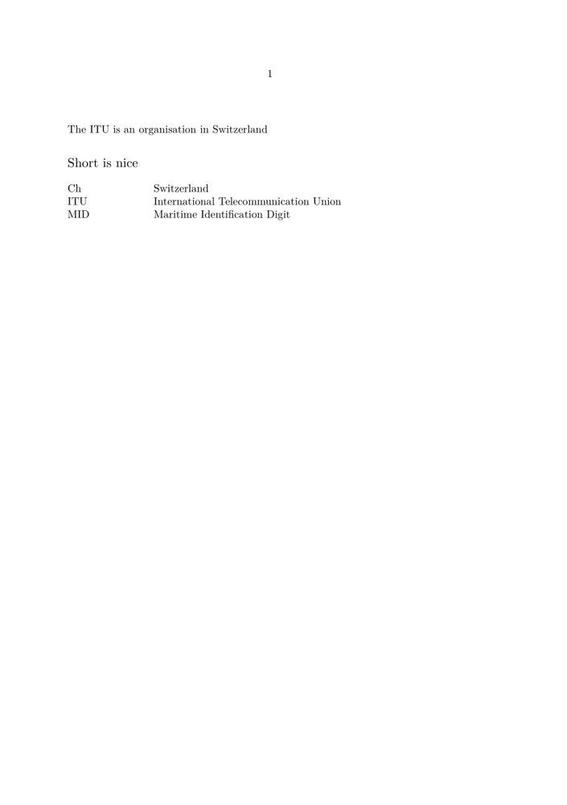

Syntax
| \definesynonyms[...][...][...][...] | |
| [...] | singular |
| [...] | plural |
| [...] | command |
| [...] | command |
Description
The first bracket pair contains the singular form of the synonym, and the second contains the plural form. The third bracket pair contains a command.
For example the command \abbreviation is defined by:
\definesynonyms[abbreviation][abbreviations][\infull] \setupsynonyms[abbreviation][textstyle=cap]
Now the command \abbreviation is available and can be used to state your abbreviations:
\abbreviation{ANWB}{Dutch Automobile Association} \abbreviation{VVV}{Bureau of Tourist Information} \abbreviation{NS}{Dutch Railways}
If you would type:
The Dutch \VVV\ (\infull{VVV}) can provide you with the tourist information on Hasselt.
You would obtain something like this:
The Dutch VVV (Bureau of Tourist Information) can provide you with the tourist information on Hasselt.
If you want to put a list of the abbreviations used in your document you can type:
\subject{Abbreviations} \placelistofabbreviations
or with automatic chapter
\completelistofabbreviations % only ones used in the text \completelistofabbreviations[criterium=all] % this prints even the unused
Example
-
\definesynonyms[test][tests][\infull] \setupsynonyms[test][criterium=all] \test{ITU}{International Telecommunication Union} \test{MID}{Maritime Identification Digit} \test{Ch}{Switzerland} \starttext The \ITU\ is an organisation in \infull{Ch} \subject{Short is nice} \placelistoftests \stoptext
looks like this:
- 
Hint
\abbreviation{\alpha}{Angle of something}
This will fail because to create a macro \alpha which expands to \alpha Use uppercase letter to prevent this, when your font contains greek you can also use a text alpha,
-
\abbreviation[ALPHA]{\alpha}{Angle of something} \abbreviation[PLANCK]{\hbar}{planckconstant} \starttext \ALPHA\ and \PLANCK \stoptext
See also
Help from ConTeXt-Mailinglist/Forum
All issues with: